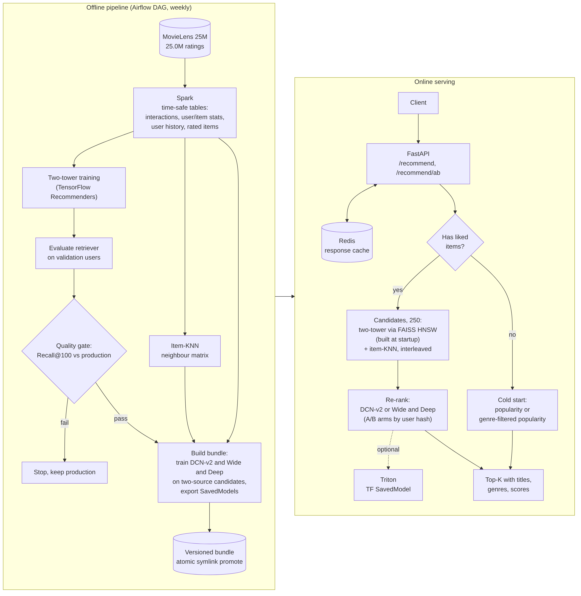

Movie recommendation · MovieLens 25M
A two-stage movie recommender, evaluated on held-out time.
Two candidate generators (a TensorFlow Recommenders two-tower model indexed in FAISS, and item-based collaborative filtering) feed a deep ranker. Cold-start fallbacks, a Redis-cached API, Spark feature tables and a gated Airflow retraining pipeline surround it.
System
RetrieveTwo-tower via FAISS HNSW and item-KNN each propose candidates.
MergeThe two lists are interleaved into 250 unseen candidates.
RankDCN-v2 (or Wide & Deep) re-scores them; A/B arms by user hash.
ServeFastAPI + Redis; popularity or genre-filtered popularity for new users.

Results on the held-out test window
6,252 users, time-based split (train before 2016-06-25, test from 2018-01-04), test scored once with models frozen at the train cut-off.
| System | Recall@10 | NDCG@10 | Recall@100 |
|---|---|---|---|
| Popularity | 0.0260 | 0.0728 | 0.1160 |
| Two-tower retriever alone | 0.0328 | 0.0857 | 0.1690 |
| Item-KNN alone | 0.0411 | 0.1091 | 0.1815 |
| Full system, DCN-v2 ranker | 0.0514 | 0.1272 | 0.2099 |
| Full system, Wide & Deep ranker | 0.0509 | 0.1273 | 0.2105 |
- The full system beats the best single retriever by +0.018 NDCG@10 (95% CI +0.015 to +0.021). On validation the gap was larger (+0.049); part of that was specific to the validation window.
- DCN-v2 and Wide & Deep are tied (NDCG@10 difference -0.0001, CI -0.0014 to +0.0011).
- Simulated A/B replay (not live traffic): CTR 5.43% vs 5.47%, p = 0.8515.
Scope and next steps
- A/B testing is simulated. Click-through comes from a replay of held-out interactions, because MovieLens has no impressions or clicks. The assignment, logging and statistics are ready for real traffic.
- Triton serving is verified. The full API ran on a real Triton server with Redis and returned the same recommendations as in-process ranking (uncached median 13.4 ms, cached 0.4 ms on a laptop CPU). Load testing and GPU serving are not covered.
- Models are evaluated frozen. They were trained 18 months before the test window, which is a deliberately strict check. The weekly retraining pipeline keeps a deployed model current.
- The sources work best together. Item-KNN is the stronger single retriever; the two-tower finds different films, and the ranker uses both.
Every number on this page is generated from results/final_test.json. Full scope notes: docs/limitations.md.